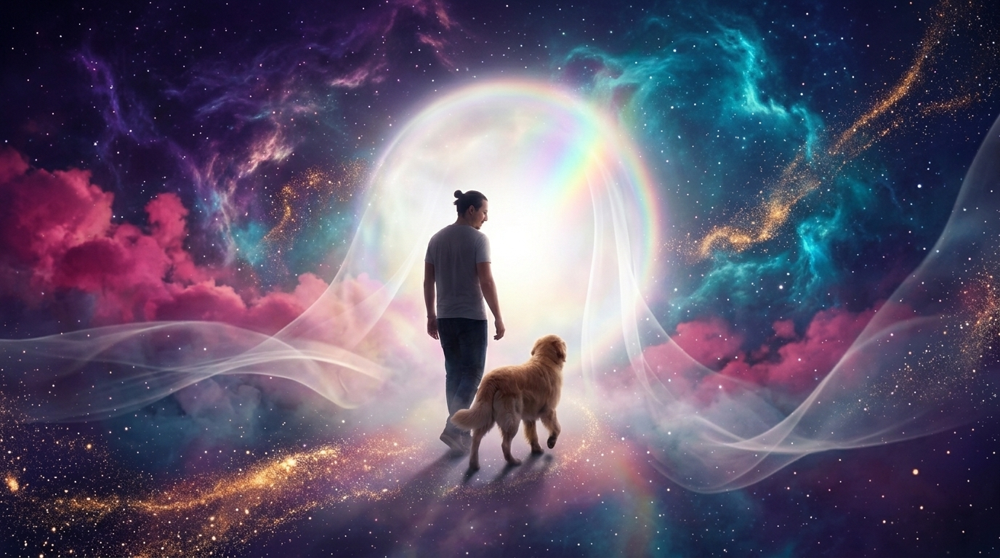
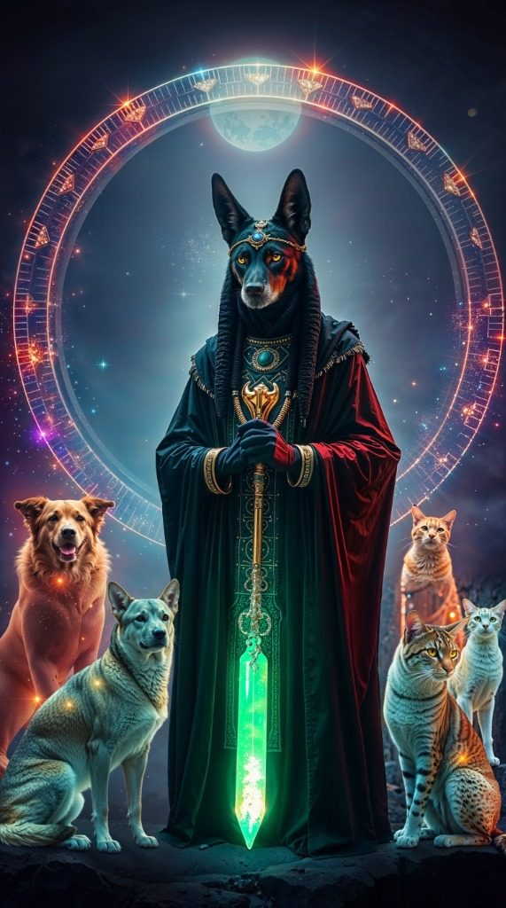

Der Pfad des Jenseits
Die physische Trennung ist nicht das Ende einer Verbindung. Auf dem Pfad des Jenseits biete ich mediale und emotionale Unterstützung durch reine spirituelle Kontaktaufnahme mit Verstorbenen (Menschen wie Tieren) sowie eine weiche Begleitung in der Phase des Abschiednehmens.

Jenseitskontakt für Tiere
Viele Tierhalter sehnen sich nach Gewissheit, wie es ihrem geliebten Begleiter auf der anderen Seite geht. Durch mediale Tierkommunikation können noch offene Botschaften übermittelt werden, um Frieden zu finden.
Trost erhalten für: verstorbenes Tier | Hunde | Katzen
Jenseitskontakt für Menschen
Mit Respekt, Einfühlungsvermögen und Professionalität stelle ich mich als Kanal zur geistigen Welt zur Verfügung. Oft können ungesagte Worte noch ausgesprochen werden und tiefer Transformationsfrieden für den Zurückgebliebenen einkehren.

Friedensreise mit Anubis (Meditation)
Eine sanfte, geführte schamanische Meditation, um deinem vorausgegangenen Tiergefährten noch einmal aus tiefstem Herzen alles Liebe zu wünschen und euren gemeinsamen Frieden nachzufühlen.
Begleitung in Krisenzeiten
Ich biete dir Begleitung auch in schweren und unsicheren Zeiten an – mit Ruhe, Sanftheit und der Kraft meiner Spirits.
Ob ein geliebtes Wesen vor kurzem über die Schwelle gegangen ist oder du auch nach längerer Zeit Trost und Frieden suchst: Ich halte für dich einen geschützten Raum, in dem Verbindung, innere Ruhe und energetische Unterstützung entstehen dürfen.
Häufige Fragen (FAQ)
Es gibt keine feste Regel. Manche Menschen spüren das Bedürfnis bereits wenige Tage nach dem Übergang, andere erst nach Jahren. Vertraue hier ganz auf deine innere Intuition – die geistige Welt ist immer erreichbar.
Nein, ganz im Gegenteil. Kontakte zur geistigen Welt sind geprägt von reiner Liebe, tiefem Frieden und Transformation. Es gibt dort keine negativen Emotionen mehr – die Botschaften spenden stets Trost.
Es kommt äußerst selten vor, dass eine Seele keinen Kontakt wünscht. Sollte das Energiefeld jedoch signalisieren, dass noch Ruhe benötigt wird, erzwingen wir nichts und wiederholen den Versuch zu einem späteren, passenden Zeitpunkt.
Die Meditation hilft dir dabei, aus der Schwere der Trauer in eine sanfte Verbundenheit zu gehen. Du bist eingeladen, alles noch Ungesagte auf Seelenebene auszutauschen und deinem Tier bewusst alles Liebe auf seinem Weg ins Licht zu wünschen.